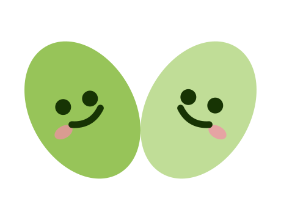
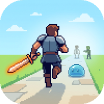
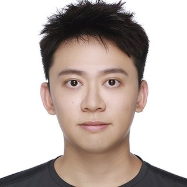

Crafting software with warmth, creating experiences that enrich the spirit.
About
Astralogy is a small independent software team. We believe what becomes most scarce in the AI era is genuine connection between people, and the warmth of human presence. What is most worth creating is richer journeys of the spirit and more varied experiences of life.
In an era when AI generates more content than anyone can keep up with, or even tell apart, what becomes scarce and precious is real connection between people. A moment of being truly heard. An activity or place you've long wanted to step into but never had the courage or chance. An afternoon of play worth remembering.
The software we make exists to support these — to help people more easily take one more step toward a fuller, richer life. Software that heals rather than hooks.
One product at a time. Made with warmth.
Our products leave you better than they found you. No engagement metrics that depend on making you feel worse. We ease anxiety; we don't sell it.
We design for real relationships between real people — not the one-way watching of deceptively-perfect virtual content, not the virtual companionship simulated by algorithms.
We build products that bring you into moments worth being present in, and experiences worth living through.
Products

Activity first. People follow.
A one-hour social app for adults 18+, launched in Singapore, Taiwan, and Hong Kong. Stop matching on profiles — post what you actually want to do in the next hour: a run, a study session, a gym set, a meal. School-email users can show a verified-school badge; Apple users can join without one. No swiping, no endless feed, no romance pressure — just real, low-pressure company when you want it. Start from what you're doing; the people show up naturally.
Download on the App Store
You run. Your hero fights.
A running RPG for iPhone and Apple Watch. Every real step moves your pixel hero forward — through monsters, bosses, and loot. Your actual pace and distance drive the whole adventure. No fake XP, no idle grinding, no pay-to-win: gear and leaderboard spots are earned by moving your body, and nothing you buy can replace a kilometer. It doubles as a running companion, tracking distance, pace, and — with Apple Watch — your heart rate.
Download on the App StoreThe People
Product · AI
PhD, UCLA — AI & Biomedical Engineering. Former ML Engineer at Workday, Inc. Leads product, fundraising, and the AI behind it all.

Architecture · Platform
PhD, Nanyang Technological University — Chemical & Biomolecular Engineering, AI. Former Researcher at A*STAR. Leads technical architecture, platform engineering, and the Singapore launch.
Contact
For partners, press, and people who'd like to build something with us.
info@astralogy.orgOne inbox · One team · One reply